PRODUCT CATALOG
Dedicated tactile RPN instruments, modular faceplates, protective TPU pouches, physical classroom manipulatives, curriculum workbooks, and free open maker downloads. Built for bare-metal calculation clarity.
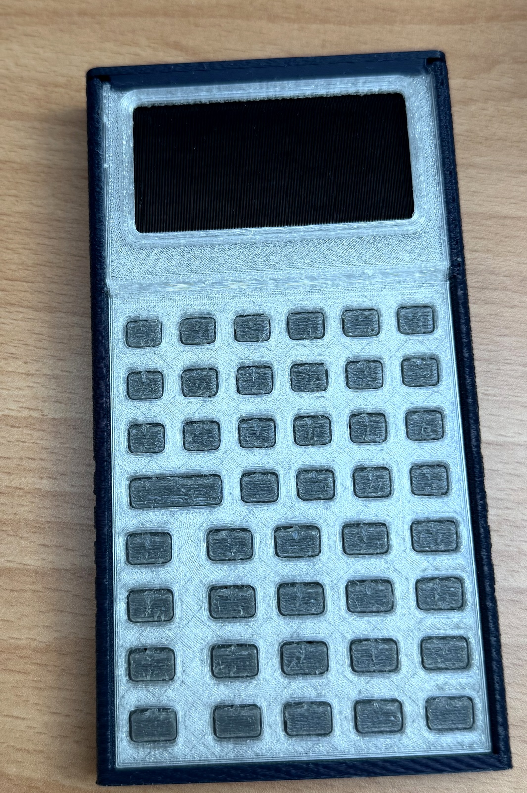
SC-32 Founder's Edition
$79 USDLimited Founder's Run 00. Tactile handheld Reverse Polish Notation scientific calculator. High-contrast reflective monochrome graphic LCD, 43 snap-dome keys, and tool-free sliding enclosure.
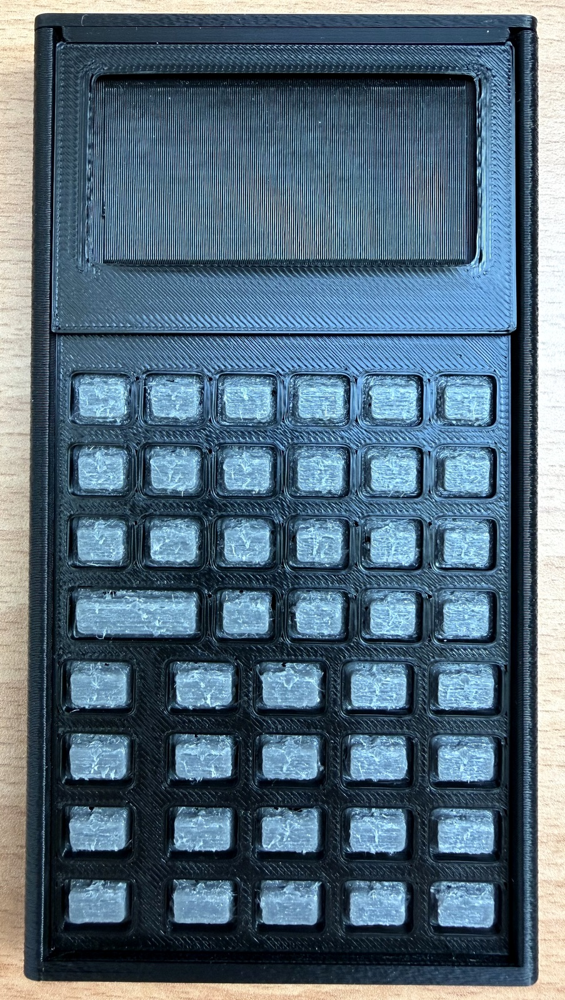
SC-32 Regular Edition
$59 USDEveryday handheld RPN scientific calculator engineered for STEM students and technical professionals. Standardized injection/durable print chassis in five signature contrast colorways.
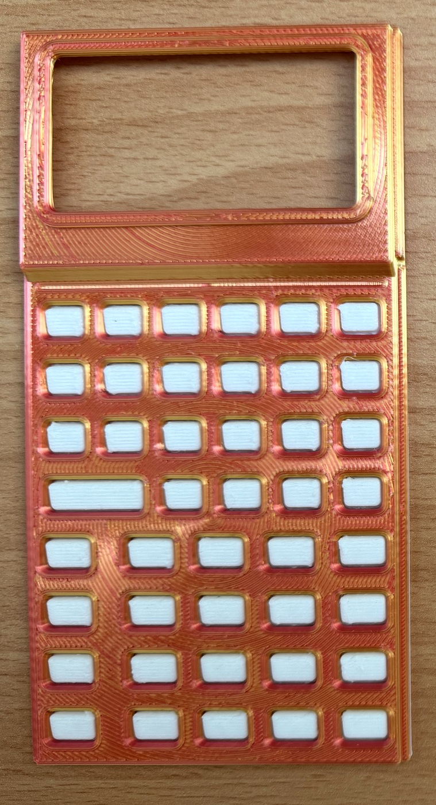
SC-6 Elementary Edition
$35 USDEarly numeracy and fraction foundations calculator designed for Grades K–6 classrooms. Features large-format tactile keys, ten-frame visual mathematics, and step-by-step simplification.
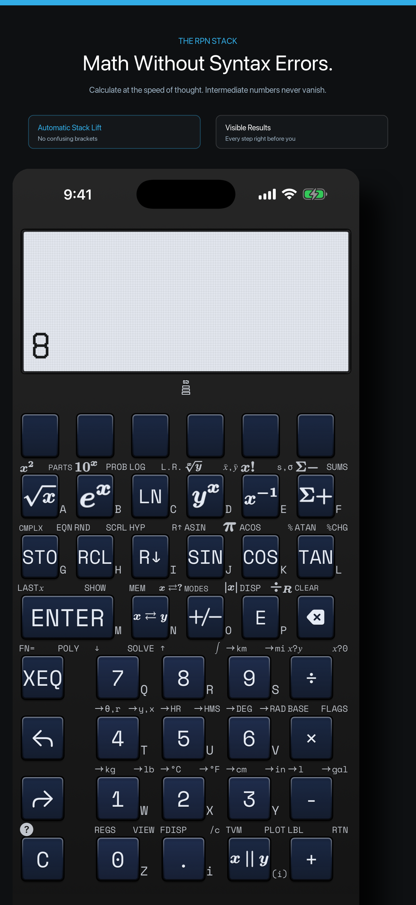
Digital Twin (iOS / watchOS)
FREEFull 1:1 mathematical and state-machine parity with the physical calculator. Standalone Apple Watch app with digital crown inertial stack scrolling, tactile haptic feedback, and Lock Screen stack widgets.
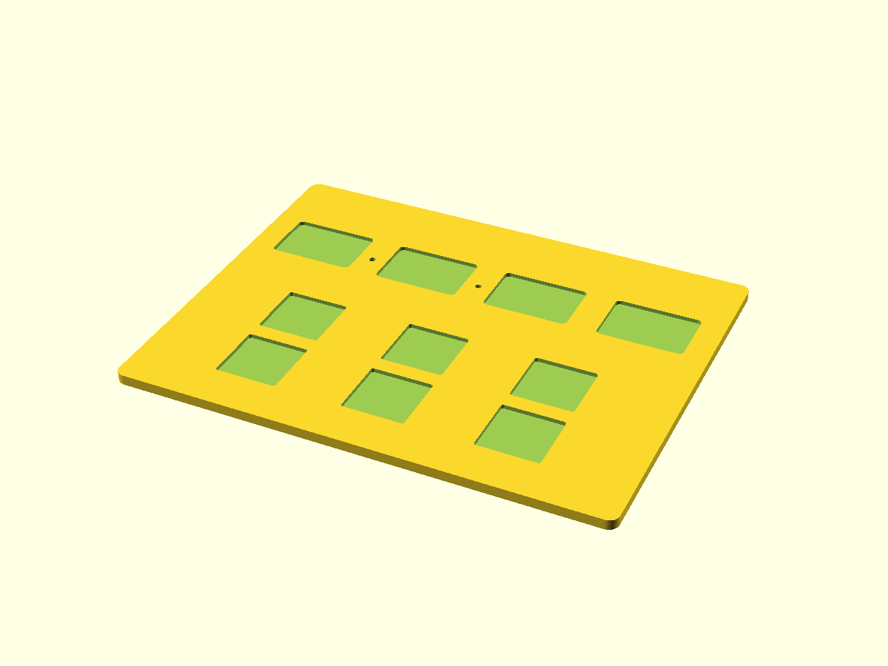
Learning Lab Tactile Kit
$48 USDComplete 79-piece hands-on STEM manipulative laboratory. Bridges tactile physical blocks with RPN operational stack mechanics. Includes Fraction Studio, Stack Stage, Expression Tree, and Coordinate Grid.
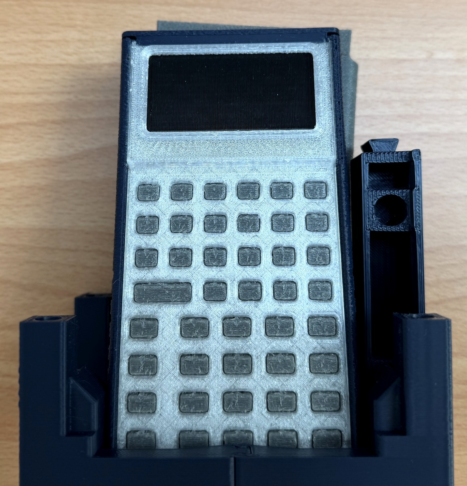
Interlocking Puzzle Stand
$18 USDPrecision 3-piece friction-fit interlocking display stand. Dual ergonomic angles for seated desktop calculation or upright shelf presentation. Disassembles in 2 seconds to lay 100% flat at 6 mm.
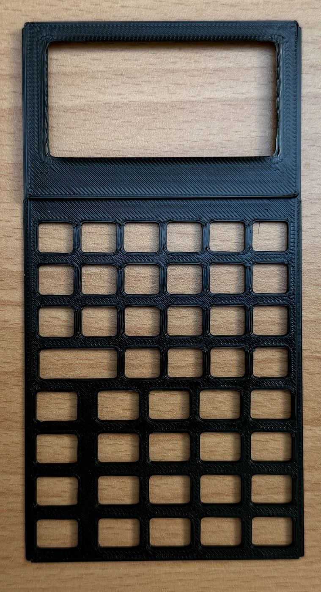
SC-32 Faceplate
$14 / $48Modular snap-fit faceplate for the SC-32 scientific calculator. Features 43-key matrix cutouts with debossed dual-shift scientific engravings (yellow math & blue system tools). Tool-free rail swap in <10s.

SC-6 Faceplate
$14 / $48Modular snap-fit faceplate for the SC-6 elementary calculator. Identical physical outer chassis geometry as the SC-32, with specialized button cutouts for ten-frames, number racks, and step-by-step [SIMP] reduction.
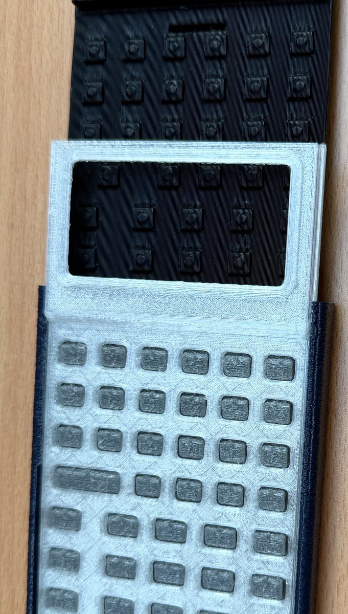
TPU Travel Pouch
$14 USDTactile drop-resistant protective sleeve cast in flexible 90A TPU. Fits both SC-32 and SC-6. Features a reversible dual-tone finish (Azure Blue & Slate Charcoal), debossed logo, and rear slot for 3 CR80 cards.
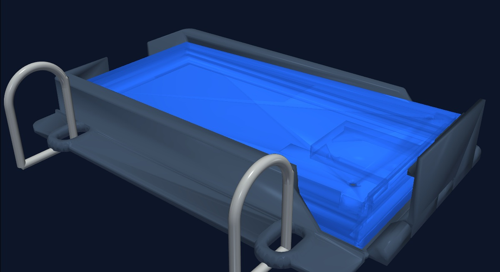
STEM Binder Pouch
$18 USDReinforced anti-tear frosted TPU binder sleeve with standard 3-ring binder grommets. Designed for school and university students to keep their SC-32 or SC-6 calculator, reference cards, and pencils bound inside binders.
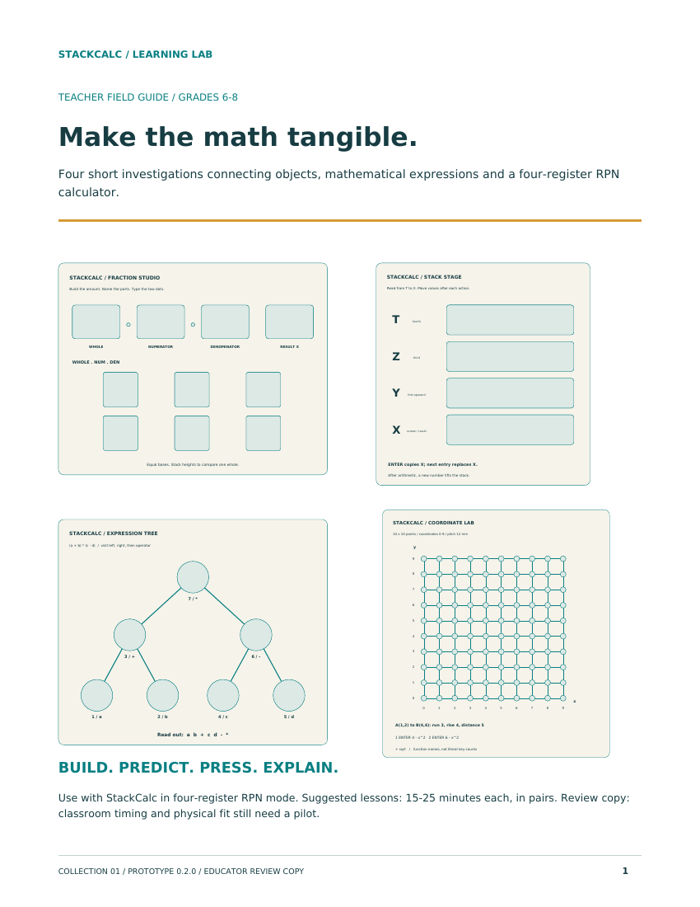
RPN Math Labs Workbook
$24 / $6536-page full-color spiral guide featuring 20 hands-on STEM investigations for Grades 6–9. Connects tactile manipulative experiments directly to RPN operational keystroke logs.
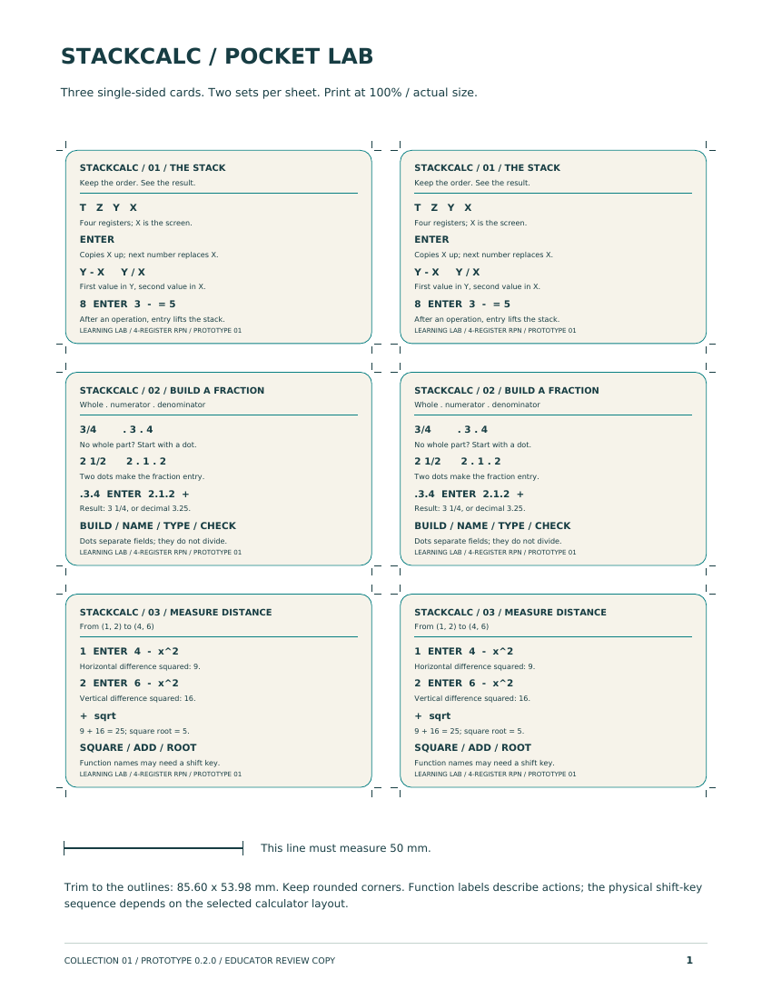
CR80 Quick-Reference Decks
$15 USDDual-column pocket cards matching standard credit card dimensions (CR80) that slide directly into the calculator's rear TPU pouch. Side-by-side textbook formulas and exact RPN keystrokes.
Unit Circle Volvelle
$12 USDZero-battery rotating dual-disc tactile trigonometric calculator. Rotating inner disc reveals exact coordinate pairs, degree/radian conversions, and tangent values through aperture windows.
SC-32 Enclosure STLs
Complete 4-part tool-free sliding mechanical assembly: chassis, faceplate with LCD cowl, 95A flexible TPU keypad membrane, and snap cap. Rev 0.2.0.
Learning Lab STLs
All 13 STL print plates (79 parts): Fraction Studio tray, 26 proportional vertical fraction towers, Stack Stage tray, Tree board, and Coordinate grid.
Teacher Starter Guide
Eight-page introductory curriculum guide with four foundational RPN investigations and reproducible student worksheet masters.
FOLLOW THE HARDWARE BUILD LOGS
We publish weekly low-level engineering logs directly on Hackaday — covering RP2350 PCB routing, TPU return membrane finite element analysis, rail friction tolerances, and bare-metal firmware emulation.
View Build Logs on Hackaday.io ↗